Խաչմերուկ (կարգավորող, լուսացույց)
1. Երթևեկությունն արգելվում է՝

2. Վարորդներից ո՞վ իրավունք ունի երթևեկել ուղիղ։
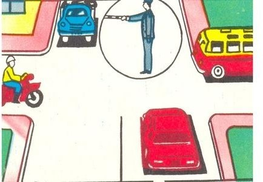
3. Ո՞ր տրանսպորտային միջոցի վարորդը պետք է զիջի ճանապարհը։
4. Եթե կարգավորողի աջ ձեռքը պարզված է առաջ, ապա ոչ ռելսագնաց տրանսպորտային միջոցների երթևեկությունը թույլատրվում է՝
5. Ո՞ր պատասխանում են ճիշտ նշված այն տրանսպորտային միջոցները, որոնց թույլատրվում է երթևեկությունը։
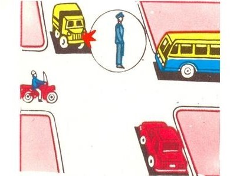
6. Ո՞ր տրանսպորտային միջոցի վարորդը պետք է զիջի ճանապարհը՝
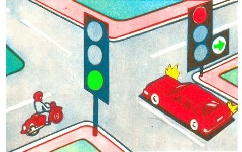
7. Կարգավորողի այս ազդանշանը նշանակում է, որ երթևեկությունը թույլատրվում է՝
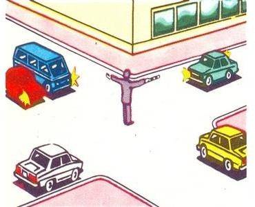
8. Ո՞ր տրանսպորտային միջոցները կարող են կատարել աջ շրջադարձ։
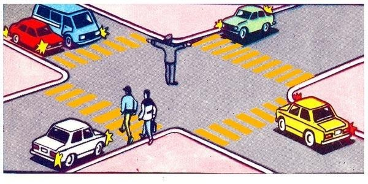
9. Երթևեկությունը թույլատրվում է՝

10. Երթևեկությունը թույլատրվում է՝
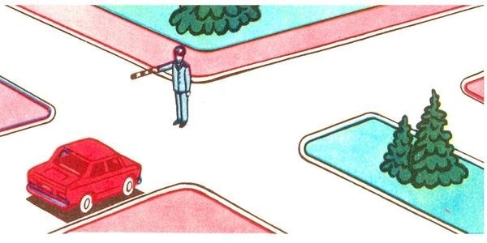
11. Այս լուսացույցն արգելում է երթևեկությունը՝
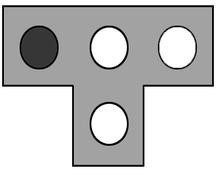
12. Եթե կարգավորողի ձեռքերը կողմ են պարզված կամ իջեցված են, ապա ոչ ռելսագնաց տրանսպորտային միջոցների երթևեկությունը թույլատրվում է՝
13. Կարմիր ավտոմոբիլի վարորդը՝
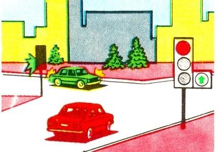
14. Ո՞ր տրանսպորտային միջոցներին է թույլատրվում երթևեկությունը։
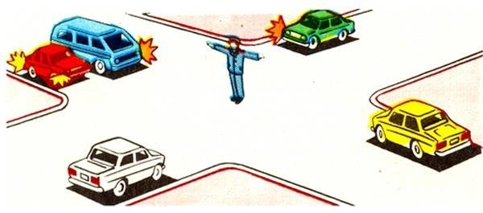
15. Լուսացույցի ի՞նչ ազդանշանի դեպքում ավտոմոբիլի վարորդը կարող է ավարտել հետադարձը։
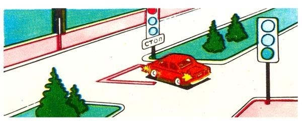
16. Ի՞նչ է նշանակում լուսացույցի դեղին և կարմիր գույների ազդանշանների զուգակցումը։
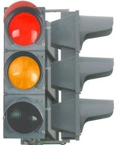
17. Ո՞ր նկարում է վարորդը ճիշտ կատարում շրջադարձը։
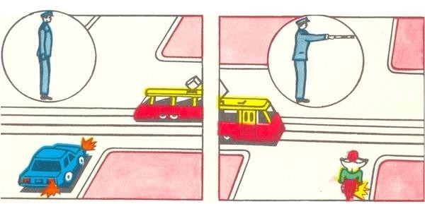
18. Պարտավո՞ր է արդյոք տրամվայի վարորդը լուսացույցի կանաչ ազդանշանի դեպքում զիջել ճանապարհն այլ ուղղություններից մոտեցող տրանսպորտային միջոցներին։
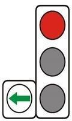
19. Այս լուսացույցը կիրառվում է երթևեկությունը կարգավորելու համար՝
20. Եթե կարգավորողի աջ ձեռքը պարզված է առաջ, ապա նրա ձախ կողմից ոչ ռելսագնաց տրանսպորտային միջոցների երթևեկությունը թույլատրվում է՝
21. Ո՞ր տրանսպորտային միջոցների երթևեկությունն է թույլատրվում լուսացույցի տվյալ ազդանշանի դեպքում։
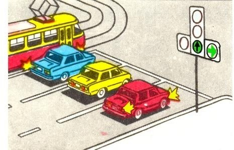
22. Երթևեկությունը թույլատրվում է՝
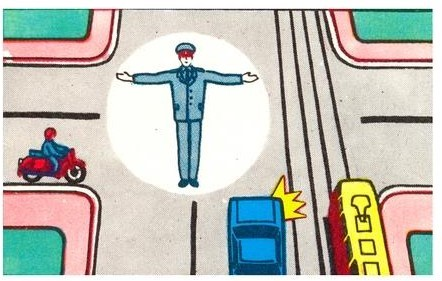
23. Եթե կարգավորողի ձեռքերը կողմ են պարզված կամ իջեցված են, ապա նրա ձախ և աջ կողմերից ոչ ռելսագնաց տրանսպորտային միջոցների երթևեկությունը թույլատրվում է՝
24. Ո՞ր տրանսպորտային միջոցի վարորդն ունի երթևեկության առավելություն։
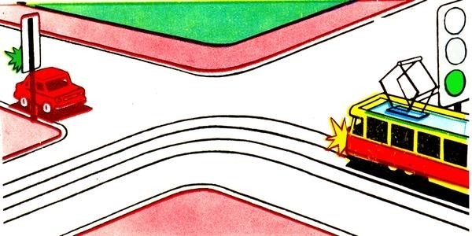
25. Երթևեկությունն արգելվում է՝
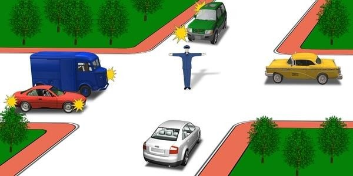
26. Այս լուսացույցի կարմիր ազդանշանի դեպքում երթևեկությունն արգվելում է՝
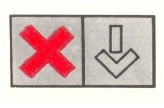
27. Ի՞նչ նշանակություն ունի լուսացույցի կլոր կանաչ թարթող ազդանշանը։
28. Տրանսպորտային միջոցները խաչմերուկը կանցնեն հետևյալ հերթականությանբ՝
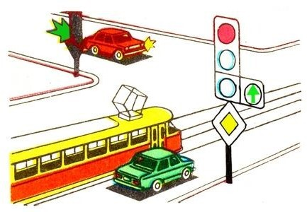
29. Ո՞ր պատասխանում են ճիշտ նշված այն տրանսպորտային միջոցները, որոնց երթևեկությունը թույլատրվում է։
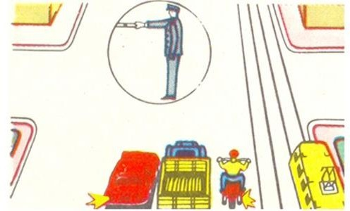
30. Եթե կարգավորողի աջ ձեռքը պարզված է առաջ, ապա նրա ձախ կողմից ոչ ռելսագնաց տրանսպորտային միջոցների երթևեկությունը թույլատրվում է՝
31. Երթևեկությունն արգելվում է՝
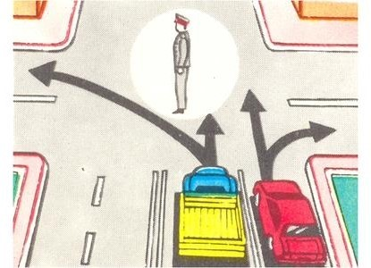
32. Ո՞ր ուղղությամբ է թույլատրվում երթևեկությունը։
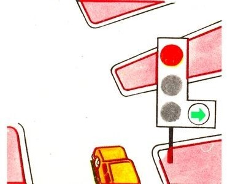
33. Խաչմերուկն առաջինը կանցնի՝
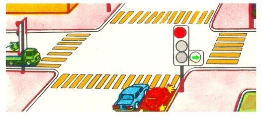
34. Ո՞ր նկարում է վարորդը ճիշտ կատարում շրջադարձը։
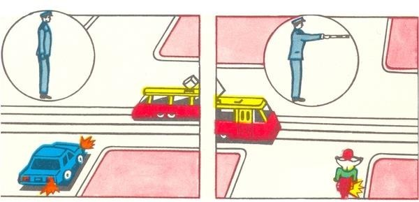
35. Կարմիր ավտոմոբիլը խաչմերուկը կանցնի՝
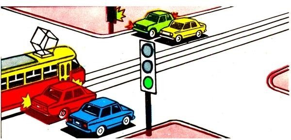
36. Այս լուսացույցը կիրառվում է՝

37. Ավտոմոբիլը խաչմերուկը կանցնի՝
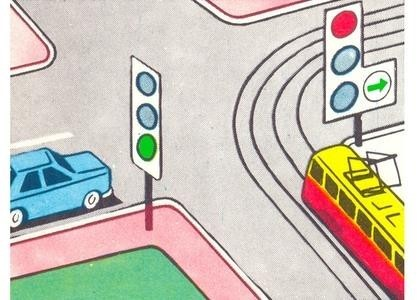
38. Երթևեկությունը թույլատրվում է՝

39. Երթևեկությունը թույլատրվում է՝
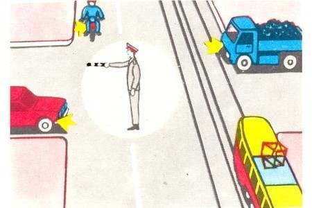
40. Թույլատրվու՞մ է երթևեկել նշված հետագծով, երբ դարձափոխային լուսացույցերն անջատված են։
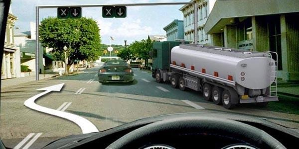
41. Տվյալ իրավիճակում ո՞ր տրանսպորտային միջոցներն ունեն երթևեկությունը շարունակելու իրավունք։

42. Ի՞նչ է տեղեկացնում լուսացույցի ազդանշանը։
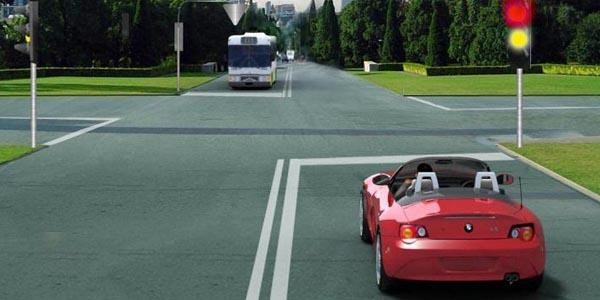
43. Թույլատրվու՞մ է թեթև մարդատար ավտոմոբիլի վարորդին առաջ անցնել ավտոբուսից, երբ դարձափոխային լուսացույցն անջատված է։
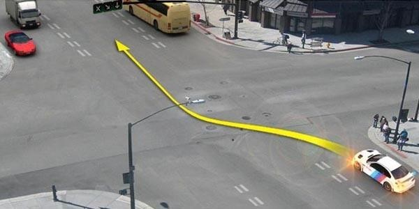
44. Ո՞ր տրանսպորտային միջոցը պետք է զիջի ճանապարհը։
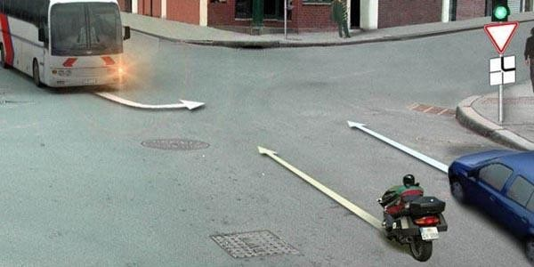
45. Նշված հետագծերով երթևեկությունը շարունակելու իրավունք ունեն`

46. Տրանսպորտային միջոցները խաչմերուկը կանցնեն հետևյալ հերթականությամբ։
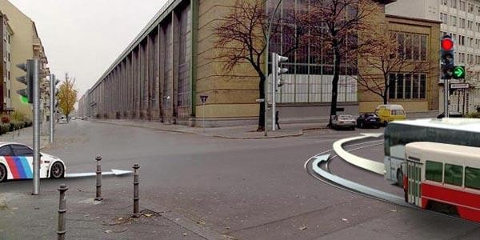
47. Տվյալ իրադրությունում ավտոբուսի վարորդն ունի՞ ուղիղ երթևեկելու իրավունք։
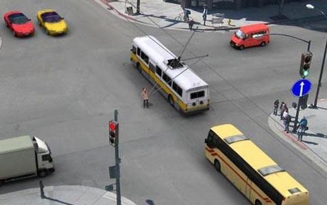
48. Ո՞ր ուղղությամբ կարող է վարորդը շարունակել երթևեկությունը։
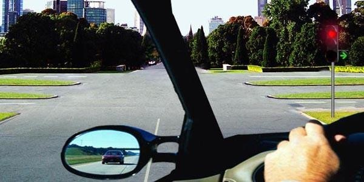
49. Աջ շրջադարձի դեպքում վարորդը պարտավոր է ճանապարհը զիջել`
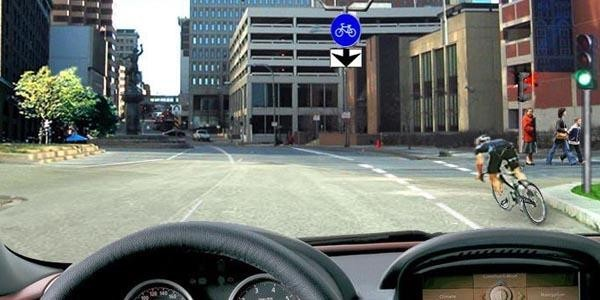
50. Տրանսպորտային միջոցները խաչմերուկը կանցնեն հետևյալ հերթականությամբ։
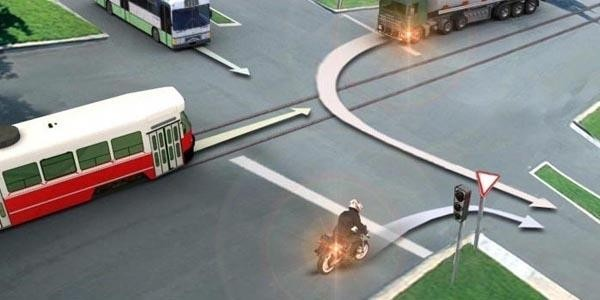
51. Այս իրավիճակում ո՞ր տրամվայի վարորդին պետք է զիջել ճանապարհը։
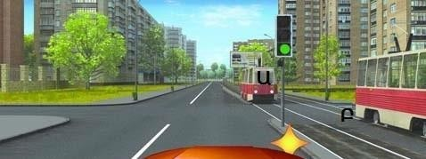
52. Ո՞ր վարորդն ունի առաջնահերթ երթևեկության իրավունք։
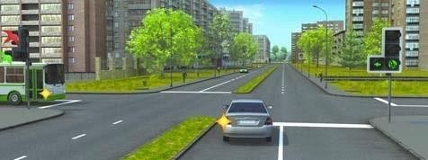
53. Այս իրավիճակում ձախ շրջադարձ կատարելիս՝
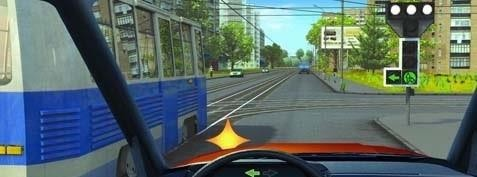
54. Ինչպե՞ս վարվել այս իրավիճակում։
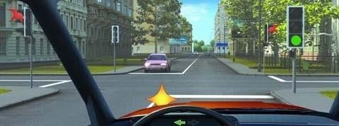
55. Ո՞ր վարորդն է խախտում երթևեկության կանոնները շրջադարձ կատարելիս։
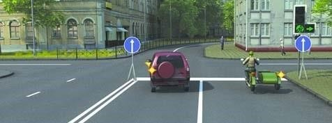
56. Աջ շրջադարձ կատարելիս այս իրավիճակում զիջել ճանապարհը՝
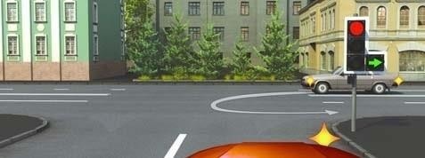
57. Աջ շրջադարձ թույլատրելի է՞ այս իրավիճակում։
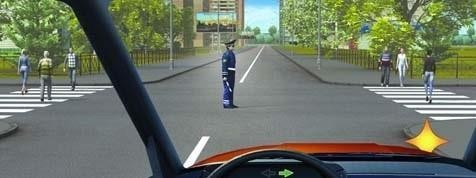
58. Զիջել ճանապարհը տրամվայի վարորդին այս իրավիճակում՝
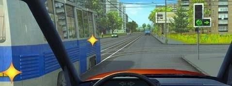
59. Կանաչ ազդանշանի միանալու դեպքում վարորդը՝
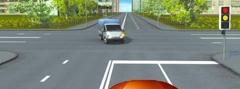
60. Այս խաչմերուկում վարորդը՝
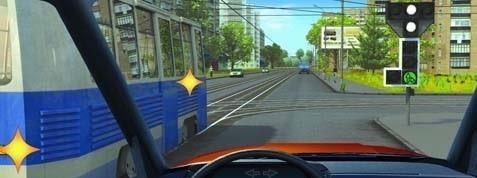
61. Խաչմերուկն ուղիղ անցնելիս վարորդը
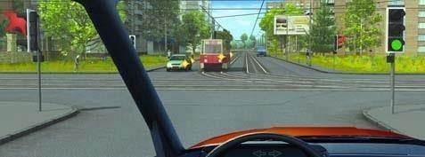
62. Շրջադարձը կատարելիս վարորդը պարտավոր է ճանապարհը զիջել
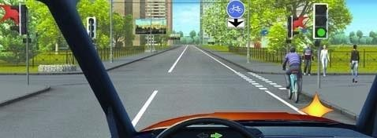
63. Աջ շրջադարձ կատարելիս պարտավո՞ր եք զիջել ճանապարհը հանդիպակացից մոտեցող վարորդին
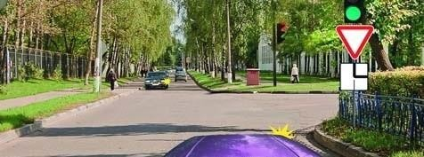
64. Խաչմերուկն ուղիղ անցնելիս
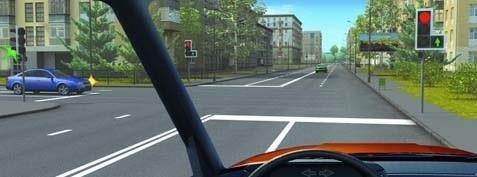